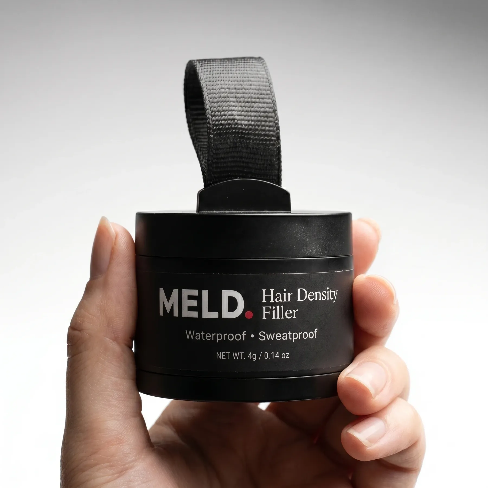

Toppik is the most recognized name in hair concealment, and for good reason: it has been on the market for decades and it works. So why do men search for a Toppik alternative at all? Usually it comes down to format, control, the shade match, or the terms of the guarantee. This guide compares MELD, a press-on micro-powder density filler, against Toppik on the points that actually decide it, using only facts each brand publishes about itself. We will also tell you, plainly, when Toppik is the better choice.
What is Toppik, and what is the MELD alternative?
Toppik is a hair concealment product made of keratin protein fibers. You shake the fibers onto thinning hair, where a static charge helps them cling to your existing strands, and many users finish with a setting spray to lock them in. Toppik is made by Church & Dwight, comes in nine shades, and markets that its fibers "resist wind, rain, and perspiration." MELD is the alternative in a different format: a fine micro-powder hair density filler you press onto the thinning area with a built-in applicator. Instead of fibers you shake and spray, MELD is a powder you dab and feather into place. Both create thicker-looking, fuller-looking hair and both wash out with shampoo. The difference men feel day to day is control, texture, the shade system, and the guarantee behind the purchase.
It is worth saying up front: this is not a fibers-are-bad argument. Keratin fibers are a proven format that millions of men use happily. The point of an alternative is that a different format suits a different person, and a powder you press into place behaves differently from fibers you shake on.
Why men look for a Toppik alternative
Men look for a Toppik alternative for a handful of practical reasons. Some want more control on a precise hairline than shake-on fibers give them. Some want a press-on powder that does not need a separate setting spray step. Some are not happy with their shade match and want a different shade system. And some are put off by Toppik's guarantee terms: the 30-day money-back guarantee applies only to purchases made directly from Toppik and requires you to call for a return authorization code before sending anything back, with third-party retail purchases excluded. None of these are dealbreakers for everyone, but each is a reason a specific man goes looking. MELD answers them with a press-on powder, a four-shade system, a longer 60-day money-back guarantee, and a Free Shade Swap.
- More control on a hairline: a press-on powder feathers into a soft front edge more easily than shake-on fibers
- No setting-spray step: MELD is designed to hold on its own with the Meldfuse™ hold
- A simpler guarantee: a 60-day money-back window, versus Toppik's 30-day direct-only policy that requires a return authorization code
- Shade help built in: a Free Shade Swap if your first guess is off, at no cost
- Discretion: MELD ships in a plain unbranded box
Meldfuse™ is our name for the way MELD's fine micro-powder clings to and blends with your existing hair for a long-lasting, sweat-resistant hold. It is not an ingredient and not a chemical bond: it is the behavior of a finely milled powder pressed into the right place. It is also why MELD is built to hold on its own, without a separate locking spray as a required step.
MELD vs Toppik: head-to-head
Here is the head-to-head, drawn only from what each brand publishes. Toppik is keratin protein fibers, made by Church & Dwight, in nine shades, marketed to "resist wind, rain, and perspiration" rather than to any stronger water claim, with a 30-day money-back guarantee on direct purchases that requires a return authorization code. MELD is a press-on micro-powder in four shades, with a sweat-resistant long-lasting hold, a 60-day money-back guarantee, a Free Shade Swap, and a plain unbranded box. Both wash out with any shampoo and both work on all hair textures. Where Toppik wins is shade range and decades of track record; where MELD wins is press-on control, a longer and simpler guarantee, and the shade swap. Read the table row by row and pick on what matters to you.
| Feature | MELD | Toppik |
|---|---|---|
| Format | Press-on micro-powder filler | Shake-on keratin protein fibers |
| Primary ingredient basis | Fine cosmetic micro-powder | Animal-derived keratin protein |
| Setting spray needed | No (Meldfuse™ hold) | Often used to lock fibers |
| Water/sweat wording | Sweat-resistant, long-lasting | "Resist wind, rain, perspiration" |
| Washes out with shampoo | Yes | Yes |
| Shades offered | 4 | 9 |
| Money-back guarantee | 60 days | 30 days, direct only, RMA code required |
| Free shade swap | Yes | No |
| Track record | Newer brand | Decades on market |
| Discreet packaging | Plain unbranded box | Standard retail box |
| Price | $35–$46 | From $24.95 |
All Toppik details reflect Toppik's own published claims and policies as of June 2026: keratin protein fiber technology, a stated "resist wind, rain, and perspiration" claim, a 30-day money-back guarantee on direct purchases requiring a return authorization code with third-party retail purchases excluded, and manufacturing by Church & Dwight. We do not repeat any performance claim we cannot stand behind for MELD.
When Toppik is still the better choice
Toppik is the better choice in several real situations, and we would rather you buy the right product than the wrong one. If you want the widest shade selection, Toppik offers nine shades to MELD's four, which matters most for less common hair colors and grays. If you value a long track record and a product backed by a large, publicly traded parent company, Toppik has been on the market for decades and is made by Church & Dwight. If you already buy Toppik at a store like Sephora or Ulta and like picking it up in person, that retail availability is a genuine convenience MELD does not match as a direct-to-consumer brand. And if you are already happy with keratin fibers and your current shade, there is no reason to switch. A good alternative earns the switch on the merits; it does not pretend the incumbent is bad.
Choose Toppik if: you need a wider shade range, you want a long-established brand with retail availability, or you are already happy with shake-on keratin fibers and your current match.
Choose MELD if: you want a press-on powder with more control on the hairline, a hold that does not require a separate setting spray, a longer and simpler 60-day guarantee, and a Free Shade Swap to dial in your color.
When MELD is the better choice
MELD is the better choice when control and simplicity matter to you. If you are concealing a hairline or a small bald spot, a press-on powder lets you build coverage in light layers and feather a soft edge, which is harder with shake-on fibers. If you dislike the extra step of a setting spray, MELD is built to hold on its own through sweat and a long day with the Meldfuse™ hold. If you have been burned by a guarantee that was short, direct-only, or required a phone call for a return code, MELD's 60-day money-back guarantee and Free Shade Swap are simpler. And if discretion matters, MELD ships in a plain unbranded box with nothing on the outside. These are the specific reasons men switch, and they are honest, not magic.
- You want maximum control on a precise hairline or a small bald spot
- You do not want a separate setting-spray step in your routine
- You want a longer, simpler money-back guarantee and a free shade swap
- You want discreet, plain-box shipping

How to switch from Toppik to MELD
Switching from Toppik to MELD is straightforward because the goal is the same: thicker-looking coverage in your thinning areas. Start by matching your MELD shade to your current hair color the same way you matched your Toppik shade, and when in doubt go a touch lighter for a more natural blend. Apply MELD to dry, styled hair by pressing the built-in applicator into the powder and dabbing it onto the thin spot, then feather with a fingertip. Expect the application to feel different from shaking on fibers: it is a press and build rather than a shake and spray, and you will likely use less product per session. Wash it out with any shampoo at the end of the day. If the shade is not perfect, use the Free Shade Swap before deciding anything else.
- Match your shade. Pick the MELD shade closest to your current color. Between two, lean lighter.
- Apply to dry hair. Press the applicator into the powder and dab it onto the thinning area after styling.
- Build and feather. Add in light layers and pat the edges so there is no visible coverage line.
- Wash out at night. Any shampoo removes it completely, with no residue or buildup.
- Fine-tune the shade. If the match is off, request a Free Shade Swap before anything else.
Common questions: MELD vs Toppik
Is MELD better than Toppik?
It depends on what you want. MELD is a press-on powder with more control on a hairline, a hold that does not require a separate setting spray, a longer 60-day money-back guarantee, and a Free Shade Swap. Toppik is shake-on keratin fibers with a wider nine-shade range, decades on the market, and retail availability. For control, simplicity, and the guarantee, many men prefer MELD. For shade range and a long track record, Toppik holds up. Neither is universally better.
Does MELD use keratin like Toppik?
No. Toppik's published technology is animal-derived keratin protein fibers. MELD is a fine cosmetic micro-powder you press into place, a different format entirely. We describe MELD only as a hair density filler, because that is what it is.
Is MELD cheaper than Toppik?
Pricing is not the headline reason to switch. MELD runs $35 to $46, with a Buy 2 Get 1 Free option, and Toppik starts from $24.95 for its regular size. The more meaningful difference is the guarantee and the shade swap: MELD's 60-day money-back window and Free Shade Swap lower the risk of trying it, which matters more than a few dollars on a first order.
Will MELD wash out like Toppik?
Yes. Like Toppik, MELD washes out with any shampoo and leaves no residue or buildup. Neither product is permanent, and you can use either on the days you want coverage and skip the days you do not.